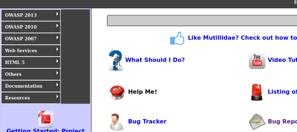
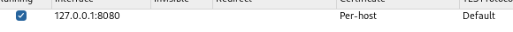
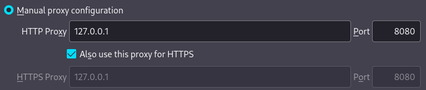
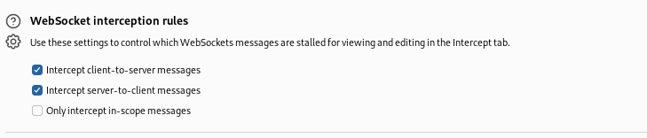
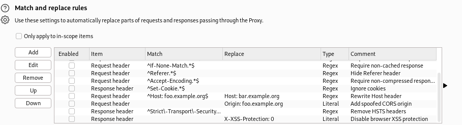
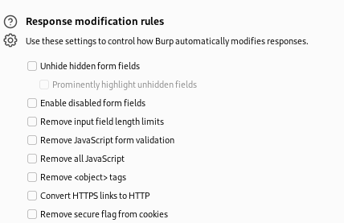

BurpSuite
Se trata de una de las herramientas más usadas y populares a la hora de realizar estas explotaciones de seguridad en web.
Se trata de un proxy de interceptación, esta herramienta se va a localizar entre nuestro navegador y la aplicación web.
Esta aplicación viene instalada por defecto en kali.
Tiene muchas funcionalidades pero por ahora vamos con la más básica que es el proxy.
BurpSuite es un proxy de interceptación y que por lo tanto tiene que situarse entre nuestro navegador y la aplicación web que nosotros estamos consumiendo para poder capturar esas peticiones que se están realizando y poder realizar acciones sobre ellas.
En este caso vamos a usar la aplicación web de Mutillidae de la máquina VPLE.

Para poder interceptar las peticiones con BurpSuite necesitamos configurar un proxy en el navegador que queramos usar o podemos abrir el que ya trae implementado burpsuite.
Si queréis hacerlo en Firefox:

Por default BurpSuite trae este proxy configurado que podemos usar o crear otro nuevo.


En este caso yo usaré el navegador que ofrece BurpSuite.
En las opciones del proxy podemos encontrar diferentes capacidades como:

Como interceptar tanto de cliente a servidor y de servidor a cliente.

Esta opción nos permite buscar y reemplazar código en las peticiones de manera automática.

Esta de igual manera permite modificar las peticiones eliminando o mostrando diferentes campos.